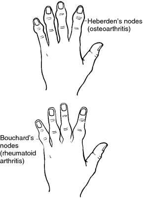
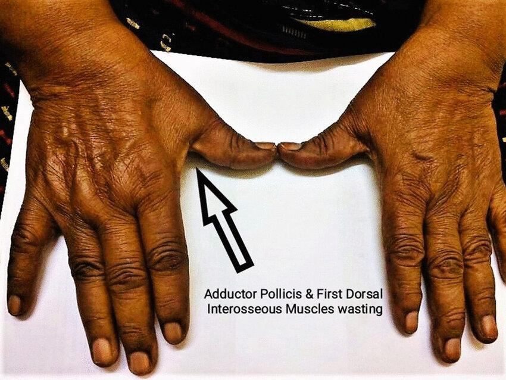
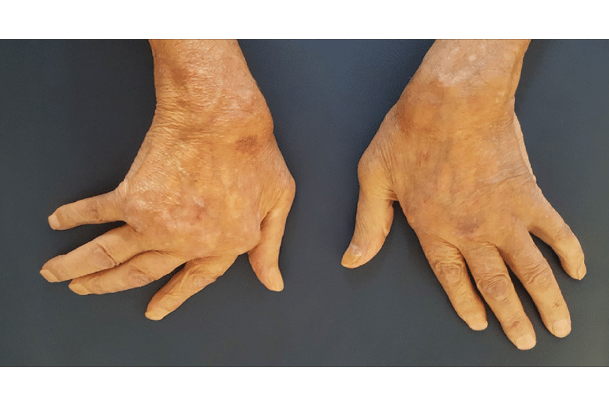

OSTEOARTHRITIS – ANNUAL VISIT
CASE FRAMEWORK
An elderly woman has come to you for her annual OA visit
Task:
- Take Hx for 4 mins
- A picture if her hand is given, explain it to the examiner
- Explain diagnosis and differentials
PART 1 – HISTORY TAKING
1. Opening the Consultation
First Open-Ended Question
Doctor: “How can I help you today?”
Patient: “I’m just here for my annual visit for my hands and my osteoarthritis.”
Second Open-Ended Question
Doctor: “Can you tell me how things are going with your hands?”
or
Doctor: “Can you tell me what has been happening with your hands so far?”
Purpose
To get an agenda – pain worse, pain better, treatment working or not working.
2. If No Specific Complaint Is Given
If the patient insists:
“I’m just here for my annual visit.”
Then proceed to systematic follow-up of osteoarthritis symptoms.
3. Symptom Assessment – PAIN (Mini-SIQORAA)
S - Site: is the pain present in certain fingers or certain part of the hand?
I – Intensity
“How would you rate your pain now from 1 to 10?”
“What was your pain like last year when I saw you?”
Purpose
To compare progression:
“This year it’s 8, last year it was 4.”
O – Onset
“Is the pain constant or does it come and go?”
R – Radiation
“Does the pain go anywhere else?”
A – Aggravating / Relieving
“Is there anything that makes it better or worse?”
A - Affect
“How is this pain affecting your life?”
4. Pain Pattern
Ask:
- “Do you get pain at night?”
- “Do you get pain at rest?”
- “Or, Is it only on activity?”
- “Is it worse in the morning or at the end of the day?”
5. Other Musculoskeletal Symptoms
Ask about:
- Swelling
- Redness
- Stiffness
- Difficulty moving joints
Crepitation
“Have you noticed any cracking sounds when you move your fingers or wrist?”
6. Disease-Specific History
Because this is a known case of osteoarthritis:
Ask:
Diagnosis
“When were you diagnosed?”
Treatment
“What treatment are you currently using?”
Compliance
“Are you taking it regularly?”
Response
“Is it helping your pain?”
Side Effects
If NSAIDs:
“Have you had any tummy pain, heartburn, or reflux?”
Follow-Up
“Are you having regular follow-ups with your GP?”
Complications – ACTIVITIES OF DAILY LIVING (ADLs)
This is the key point of this case
General ADL Question
“Are you able to do your daily activities?”
Specific ADL Questions
“Who cooks for you?”
“Are you able to cook for yourself?”
“Can you dress yourself?”
“Can you wash yourself?”
8. Geriatric Screening
Mood & Mental Health
“How has your mood been?”
“How is your sleep?”
“Do you still enjoy things?”
Support
“Who do you live with?”
“Is your partner supportive?”
“Do you have family nearby?”
If No Support
“Who does your shopping?”
“Who does your cooking?”
Diet
“Can you describe your diet to me?”
Falls
“Have you had any falls?”
9. Deformity
“Have you noticed any deformity or changes in the joints of your hands?”
PART 2 – PHOTO INTERPRETATION (INSPECTION)
The purpose is to identify classic osteoarthritis features
Joint Involvement Pattern
- Osteoarthritis →
PIP, DIP, thumb joints - Rheumatoid arthritis →
MCPs and PIPs, usually not DIPs
Nodes

- Heberden’s nodes → DIP joints
- Bouchard’s nodes → PIP joints
Other Findings
Wasting
Chronic pain → reduced use → muscle wasting

Deviation
- Radial deviation → toward radius (USUALLY OA)
- Ulnar deviation → toward ulna (USUALLY RA)

Example Photo Description
“In this photo I can see Bouchard’s nodes over the proximal interphalangeal joints. I am not seeing Heberden’s nodes. I can see a little bit of radial deviation in the wrist and ulnar deviation in the metacarpophalangeal joints. I can also see some wasting.”
PART 3 – VERY BRIEF PHYSICAL EXAMINATION (If Asked)
Inspection
- Herberden’s nodes
- Bouchard’s nodes
- Deviation
- Wasting
Palpation
- Check rise in temperature
- Palpate all small joints
- Look for:
- Tenderness
- Swelling
- Effusion
- Tenderness
Movement
- Active and passive movements of: flexion, extension, adduction and abduction of
- Fingers
- Thumb
- Wrist
- Fingers
Special test
- Check the functional assessment of the hand
- checking the strength of the grip: asking the patient to hold the paper clip, pick up the coin to check the pincer grip, give me the OK sign, hold the key for the lateral grip and so on
PART 4 – DIAGNOSIS
“You have a condition called osteoarthritis in the hands. This is wear and tear of the small joints of the hands that happens with increasing age.”
PART 5 – DIFFERENTIAL DIAGNOSIS
Arthritis differentials:
- Rheumatoid arthritis
- Psoriatic arthritis
- Gout
- Reactive arthritis